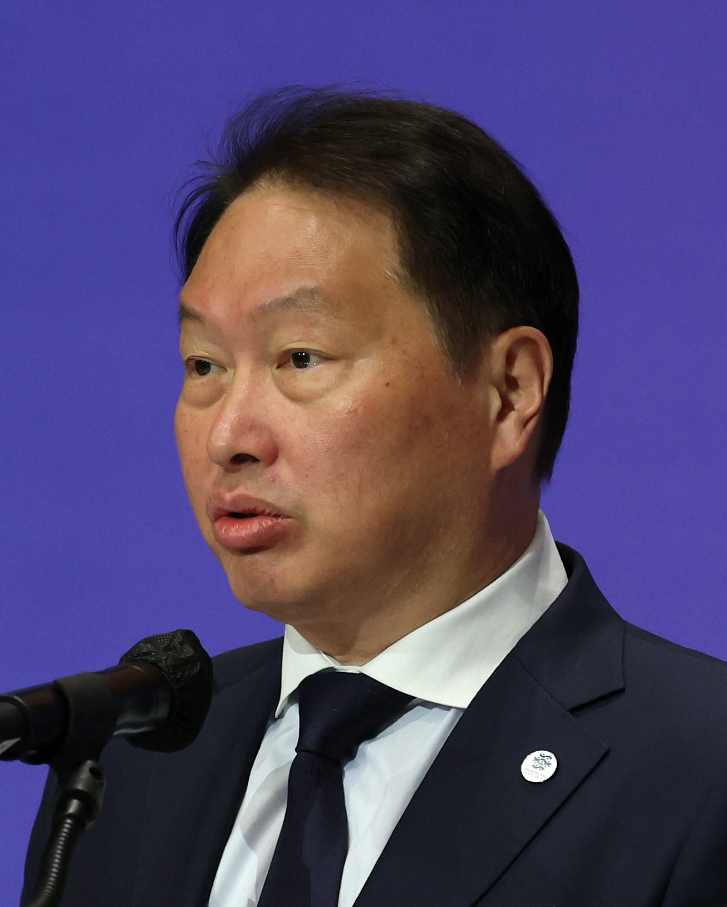

APEC '중국의 해'… 아태 언론인들, 협력 기회 논의
올해 아시아태평양경제협력체(APEC) 의장국을 맡은 중국에서 아태 지역 언론인들이 모여 역내 협력 기회를 주제로 논의했다. 무역 원활화와 디지털 경제, 인적 교류가 주요 화제로 올랐다.
강패산 기자 · 2026.09.07
橋중국

아시아태평양경제협력체(APEC) 의장국 활동과 관련해 아태 지역 언론 관계자들이 함께 협력 기회를 이야기하는 자리가 마련됐다고 환구망이 전했다.
광고 문의 · 300×250APEC은 21개 회원 경제체가 참여하는 협의체로, 구속력 있는 조약보다 합의와 권고를 중심으로 운영된다. 의장국은 한 해 동안 회의 의제를 설정하고 각급 회의를 주관한다.
역내 언론 교류는 정상회의 부대 행사로 자리 잡아 왔다. 회원 경제체의 규제 환경과 소비 시장을 서로 소개하는 성격이 강해, 기업의 진출 정보 통로로도 활용된다는 평가가 있다.
올해 논의에서는 무역 원활화 절차, 디지털 경제 규범, 인적 교류 회복이 공통 화제로 언급됐다. 특히 통관 전자화와 상호 인증은 중소기업의 비용에 직접 영향을 주는 항목으로 꼽힌다.
한국과 대만도 APEC 틀 안에서 활동하는 경제체다. 정치적 지위와 무관하게 경제 협의에 참여하는 구조여서, 역내 다자 논의 가운데 참여 폭이 넓은 편에 속한다.
실질적인 성과는 연말 정상회의 공동성명에 어떤 항목이 담기는지로 확인된다. 그 전까지 이어지는 실무 회의의 논의가 문안의 골격을 만든다.
출처·참고 (사실 확인용 — 본문은 직접 재작성)
· https://www.huanqiu.com/
· https://www.huanqiu.com/